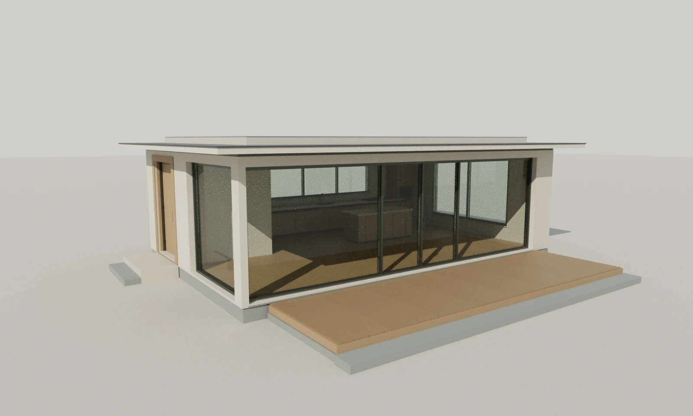

Разные задачи.
Цельный подход.
Основные сайты, готовые к просмотру. Каждый проект открывается со своей главной страницы; внутренние страницы и демонстрационные сценарии доступны в навигации.

AXIS
01 ↗Архитектурное бюро. «Горизонт», интерактивная модель и прогулка.
VOID
02 ↗Дизайн-студия. Кинетическая айдентика и связанные визуальные системы.
MONOLITH
03 ↗Бетон, производство и поставки. Каталог и демонстрационная заявка.
TORQ
04 ↗Автозапчасти. Подбор деталей, корзина и демонстрационное оформление.
MOKA
05 ↗Кофейня. Кофе, меню и атмосфера.